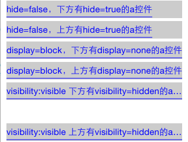
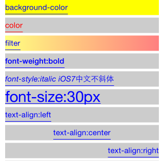
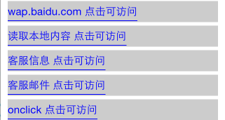
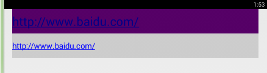
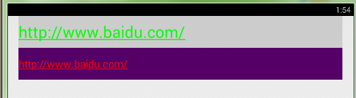
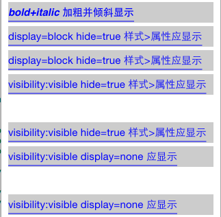

- Introduction
- 1. EMP5.4技术白皮书
- 2. EMP 安全
- 3. Release Note
- 4. EMP产品已知问题列表
-
5.
EMP界面开发规范
- 5.1. 变更记录
- 5.2. FAQ
- 5.3. CSS样式
- 5.4. 属性
-
5.5.
界面标签
- 5.5.1. 控件支持属性和样式对照表
-
5.5.2.
基础标签
- 5.5.2.1. A
- 5.5.2.2. B & Strong
- 5.5.2.3. Body
- 5.5.2.4. Br
- 5.5.2.5. Div
- 5.5.2.6. Form
- 5.5.2.7. I & Em
- 5.5.2.8. Img
- 5.5.2.9. InputButton
- 5.5.2.10. InputCheckbox
- 5.5.2.11. InputHidden
- 5.5.2.12. InputPassword
- 5.5.2.13. InputRadio
- 5.5.2.14. InputSegment
- 5.5.2.15. InputSwitch
- 5.5.2.16. InputText
- 5.5.2.17. Label
- 5.5.2.18. Richtext
- 5.5.2.19. Select & Option
- 5.5.2.20. Table & Tr & Td & Th
- 5.5.2.21. Webview
- 5.5.3. SDK定制说明
- 5.5.4. 定制标签
- 5.6. 布局与刷新
-
5.7.
Lua
-
5.7.1.
基础Lua库
- 5.7.1.1. accelerometer
- 5.7.1.2. audio
- 5.7.1.3. corp
- 5.7.1.4. database
- 5.7.1.5. document
- 5.7.1.6. file
- 5.7.1.7. gesture
- 5.7.1.8. gps
- 5.7.1.9. history
- 5.7.1.10. http
- 5.7.1.11. json
- 5.7.1.12. kv
- 5.7.1.13. location
- 5.7.1.14. offline
- 5.7.1.15. qrcode
- 5.7.1.16. screen
- 5.7.1.17. system
- 5.7.1.18. timer
- 5.7.1.19. tls
- 5.7.1.20. utility
- 5.7.1.21. video
- 5.7.1.22. window
- 5.7.2. 界面标签支持的Lua接口
- 5.7.3. 动画
- 5.7.4. RYTL脚本库
-
5.7.1.
基础Lua库
- 5.8. javascript
- 5.9. 事件
- 6. EMP开发配置
- 7. Migrate
- 8. EWP5.4管理后台功能说明文档
- 9. EWP API
-
10. EWP DEMO
- 10.1. redis缓存示例
- 10.2. redis数据存储示例
- 11. EWP Manual
- Published using GitBook
Link
1 功能说明
<a> 标签定义超链接，用于从一个页面链接到另一个页面。
<a> 元素最重要的属性是 href 属性，它指定链接的目标。
其默认外观是：
- 未被访问的链接带有下划线而且是蓝色的
- 活动链接带有下划线而且是红色的
- 因Android平台的特殊性，无法实现活动链接带有下划线而且是红色的功能。
- iOS 6.0以下系统不支持下划线功能。
示例代码：
<a href="http://www.w3school.com.cn">W3School</a>
2 属性
2.1 enable
指定控件是否可用，即是否响应用户操作
@value string true/false
true 表示接受用户操作
false 表示不接受用户操作
@default true
2.2 href
指定链接的目标的URL
@value string url字符串
@see 属性
2.3 linebreakmode
指定文字省略的模式
@value string类型 head/tail/middle/none
head：表示文字开始部分省略，用'...'代替
tail：表示文字结尾部分省略，用'...'代替
middle：表示文字中间部分省略，用'...'代替
none：不使用'...'代替文字.
@default none
3 样式
3.1 background-color
指定控件背景色
3.2 color
指定控件文本颜色
3.3 filter
指定控件的渐变色背景色样式
3.4 font-size
指定控件文本的字体大小
3.5 font-weight
指定控件文本是否加粗显示
3.6 height
指定控件高度
@default 根据文字内容计算
3.7 text-align
指定控件文字显示位置
3.8 width
指定控件宽度
@default 根据文字内容计算，但宽度不可超出父控件显示范围
4 伪类
支持:active,:inactive样式
4.1 color
按钮上文本颜色，即按钮上显示的文字颜色，支持色值格式#RGB(#FF00FF)。
4.2 background-color
指定按钮背景色。如果按钮有边框则背景色不应该超出边框的显示区域。
4.3 font-size
设置字体大小
5 事件
5.1 onclick
针对用户的点击事件,并且控件在可用状态下,触发此事件。
注：当onclick和href属性同时存在时：链接的 onclick 事件被先执行， href 属性下的动作不执行。
6 Examples
示例Link.xml
6.1 position
css样式：
<style>
.father{width:300px;height:30px;left:10px;font-size:15px;background-color:#CCCCCC;}
.positionFixed{position:fixed;top:100px;}
.positionToplevel{position:toplevel;top:200px;left:10px;background-color:#ff0000;}
</style>
页面布局
<body>
<!-- positon:fixed -->
<a class='father,positionFixed'> positon:fixed body第一个控件 </a>
...
其他控件代码
...
<!-- positon:toplevel -->
<a class='father,positionToplevel' > positon:toplevel 不随页面滚动 </a>
...
其他控件代码
...
<!-- positon:fixed -->
<a class='father,positionFixed'> positon:fixed body最后一个控件 </a>
</body>
效果图

说明
声明positon:fixes的样式的控件，将定位于页面顶部或底部，且不随页面滚动而滚动。且样式top或者bottom失效，但是left或者right有效。
声明position:toplevel样式的控件，不随页面滚动而滚动。且定位布局有效。
6.2 linebreakmode
css样式：
<style>
.father{width:300px;height:30px;left:10px;font-size:15px;background-color:#CCCCCC;}
.linebreakmode{font-size: 14px;}
</style>
页面布局
<body>
<!-- linebreakmode -->
<a class="father,linebreakmode" linebreakmode="head">linebreakmode="head",文字开始部分省略,用'...'代替.</a>
<a class="father,linebreakmode" linebreakmode="tail">linebreakmode="tail",文字结尾部分省略,用'...'代替.</a>
<a class="father,linebreakmode" linebreakmode="middle">linebreakmode="middle",文字中间部分省略,用'...'代替.</a>
<a class="father,linebreakmode" linebreakmode="none">linebreakmode="none",不使用'...'代替.增加文字超过一行。</a>
<a class="father,linebreakmode" numlines="1">numlines="1",linebreakmode未设置,此时在末尾省略。</a>
</body>
效果图

6.3 hide dispaly visibility
css样式：
<style>
.father{width:300px;height:30px;left:10px;font-size:15px;background-color:#CCCCCC;}
.display1{display:none;}
.display2{display:block;}
.visibility1{visibility:visible;}
.visibility2{visibility:hidden;}
</style>
页面布局
<body>
<!-- hide -->
<a hide='false' class='father' > hide=false，下方有hide=true的a控件 </a>
<a hide='true' class='father' > hide=true的a控件,不应该显示出来 </a>
<a hide='false' class='father' > hide=false，上方有hide=true的a控件 </a>
<!-- diaplay -->
<a class='father,display2' > display=block，下方有display=none的a控件 </a>
<a class='father,display1' > display=none，不应该显示出来 </a>
<a class='father,display2' > display=block，上方有display=none的a控件 </a>
<!-- visibility -->
<a class='father,visibility1' > visibility:visible 下方有visibility=hidden的a控件 </a>
<a class='father,visibility2' > visibility:hidden 不应该显示 </a>
<a class='father,visibility1' > visibility:visible 上方有visibility=hidden的a控件 </a>
</body>
效果图

说明
由所附截图可以看出，不论是属性hide='false'或者是样式display:none都将对控件起到隐藏的效果，且控件隐藏后不占布局。而通过visibility:hidden设置隐藏的控件隐藏后将占布局。
6.4 color font 相关
css样式：
<style>
.father{width:300px;height:30px;left:10px;font-size:15px;background-color:#CCCCCC;}
.background_color {background-color:#FFFF00;}
.textColor {color:#ff0000;}
.filter {filter:progid(startColorStr='#FFFF00',endColorStr='#ff0000',gradientType='1',alpha='0.5');}
.fontWeight{font-weight:bold;background-color:#CCCCCC;}
.fontSize{font-size:30px;}
.fontStyle{font-style:italic;}
.textAlignLeft{text-align:left;}
.textAlignCenter{text-align:center;}
.textAlignRight{text-align:right;}
</style>
页面布局
<body>
<!-- background-color -->
<a class='father,background_color' > background-color </a>
<!-- color -->
<a class='father,textColor' > color </a>
<!-- filter -->
<a class='father,filter' > filter </a>
<!-- font-weight -->
<a class='father,fontWeight' > font-weight:bold </a>
<!-- font-style -->
<a class='father,fontStyle' > font-style:italic iOS7中文不斜体 </a>
<!-- font-size -->
<a class='father,fontSize' > font-size:30px </a>
<!-- text-align -->
<a class='father,textAlignLeft'> text-align:left </a>
<a class='father,textAlignCenter'> text-align:center </a>
<a class='father,textAlignRight'> text-align:right </a>
</body>
效果图

6.5 enable
css样式：
<style>
.father{width:300px;height:30px;left:10px;font-size:15px;background-color:#CCCCCC;}
</style>
页面布局
<body>
<!-- enable -->
<a class="father" href="tel://4008888888" enable="true">客服电话(测试enable="true") 点击可访问</a><br/>
<a class="father" href="tel://4008888888" enable="false">客服电话(测试enable="false")</a><br/>
</body>
效果图
说明
当属性enable="true"时，点击会有相应。如当点击客服电话时，会根据设备的实际情况做出响应，如下图（iOS端显示效果，各平台不统一）：
6.6 href onclick
css样式：
<style>
.father{width:300px;height:30px;left:10px;font-size:15px;background-color:#CCCCCC;}
</style>
页面布局
<body>
<!-- href -->
<a class="father" href="http://wap.baidu.com">wap.baidu.com 点击可访问</a><br/>
<a class="father" href="local://TEST.txt">读取本地内容 点击可访问</a><br/>
<a class="father" href="sms://8888888888">客服信息 点击可访问</a><br/>
<a class="father" href="mailto://a.bc@rytong.com">客服邮件 点击可访问</a>
<!-- onclick -->
<a class="father" onclick="click()">onclick 点击可访问</a><br/><br/>
</body>
效果图

说明
当指明href或者onclick属性时，点击控件会响应用户操作。比如点击客服邮件，会根据设备的实际情况做出响应，如下图（iOS端显示效果，各平台不统一）：
6.7 无指定宽度
css样式：
<style>
.father{width:300px;height:30px;left:10px;font-size:15px;background-color:#CCCCCC;}
</style>
页面布局
<body>
<!-- 无指定宽度 -->
<a> 不指定控件样式的情况</a><br/>
<a> 不指定控件样式且长度超过一行显示的情况</a><br/><br/>
</body>
效果图
说明
当不指定a标签样式时，显示的宽度是根据a标签自身字符串计算得出的。
6.8 伪类
css样式：
<style>
.father{width:300px;height:30px;left:10px;font-size:15px;background-color:#CCCCCC;}
.a_color{color:#00ff00;}
.a_fontsize{font-size:10px;}
.a:active{background-color:#550066;}
.a_color:active{color:#0000ff;}
.a_fontsize:inactive{font-size: 15px;}
</style>
页面布局
<body>
<!-- 伪类 -->
<a class="father,a_color">http://www.baidu.com/</a>
<a class="father,a_fontsize">http://www.baidu.com/</a>
</body>
效果图

图一：没有点击链接

图二：点击第一个链接

图三：点击第二个链接
说明
当点击第一个链接后，background-color:#550066,color:#0000ff;当点击第
二个链接后,background-color:#550066,样式a_fontsize的font-size:15px,
但是因为样式a_fontsize的后缀是inactive,所以字体大小没有改变.
注：链接字体默认颜色为蓝色，点击后默认为红色。
6.9 其他
css样式：
<style>
.father{width:300px;height:30px;left:10px;font-size:15px;background-color:#CCCCCC;}
.display1{display:none;}
.display2{display:block;}
.fontWeight{font-weight:bold;background-color:#CCCCCC;}
.fontStyle{font-style:italic;}
.visibility1{visibility:visible;}
.visibility2{visibility:hidden;}
</style>
页面布局
<body>
<!-- 组合测试 -->
<!-- font-style font-weight -->
<a class="fontWeight,fontStyle,father">bold+italic 加粗并倾斜显示</a>
<!-- hide display -->
<a hide="true" class="father,display2">display=block hide=true 样式>属性应显示</a>
<a hide="false" class="father,display1">display=none hide=false 样式>属性不显示</a>
<a hide="true" class="father,display2">display=block hide=true 样式>属性应显示</a>
<!-- hide visibility -->
<a hide="true" class="father,visibility1">visibility:visible hide=true 样式>属性应显示</a>
<a hide="false" class="father,visibility2">visibility:hidden hide=false 样式>属性占位不显示</a>
<a hide="true" class="father,visibility1">visibility:visible hide=true 样式>属性应显示</a>
<!-- display visibility -->
<a class="father,display1,visibility1">visibility:visible display=none 应显示</a>
<a class="father,display2,visibility2">visibility:hidden display=block 占位不显示</a>
<a class="father,display1,visibility1">visibility:visible display=none 应显示</a>
</body>
效果图

说明
此测试用例主要用于测试控件支持的属性和控件支持的样式的组合测试。针对上述，我们做如下说明：
font-weight和font-style样式的组合使用，可以支持字体的多种形式。注：iOS6中，中文支持粗体加斜体的样式，IP平台受系统限制，中文文字设置为粗体斜体加下划线时，中文文字不会应用斜体的样式。- 因为样式优先的原则，当
hide属性和diaplay、visibility样式共同作用于控件时，样式将起决定作用。 - 我们规定，
visibility样式将覆盖display样式。
| Date | Note | Modifier |
|---|---|---|
| 2014-12-18 | href onclick 逻辑调整 | yu.jianfeng |
| 2015-01-14 | iOS 6.0一下不支持下划线 | lin.jitao |
| 2015-04-08 | 增加属性linebreakmode,支持样式伪类 | lin.jitao |
| 2015-08-17 | 增加属性linebreakmode示例，以及伪类示例 | liu.zhipeng |
| 2015-12-23 | 补充默认宽高说明 | zhou.changjin |